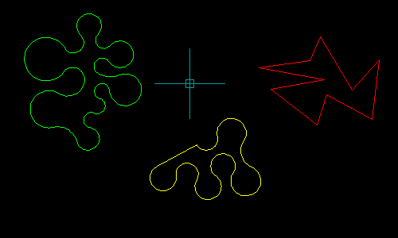
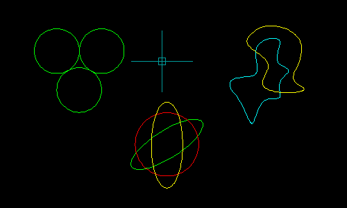

Minimum Enclosing Circle
This page is delivered for consistency purposes only, as part of the LeeMac sample module of DynALisp, which shows how DynALisp turns existing AutoLISP programs into a module. The program and its description are the work of Lee Mac, who keeps all the credit for them. The original page, with the latest version, is on Lee Mac's website: https://lee-mac.com/minimumenclosingcircle.html
See also Minimum Enclosing Circle function, Entity to Point List & Convex Hull
| Function Syntax | LM-MinimumEnclosingCircle – original syntax: MEC / MECM (Multiple) (see aliases) |
| Current Version | 1.1 |
| Compatible with AutoCAD for Mac? | No |
| Compatible with AutoCAD LT? | Yes |
| Original Page | lee-mac.com/minimumenclosingcircle.html |
Program Description
This program will prompt the user make a selection of one or more objects, then proceed to construct the unique minimum enclosing circle containing all objects in the selection.
The program offers two commands: 'MEC' (Minimum Enclosing Circle) will prompt the user to select a single object, then construct the smallest circle containing the selected object; 'MECM' (Minimum Enclosing Circle Multiple) will allow the user to make a selection of multiple objects, then construct the minimum circle containing all objects in the selection.
Upon object selection, the program first utilises my Entity to Point List function to convert the selected object(s) into a list of points. The convex hull of these points is then computed using my Convex Hull function, and finally the minimum enclosing circle is ascertained by my Minimum Enclosing Circle function. More information about these functions and the various algorithms used can be found on their respective program pages.
Demonstration of Single Object Selection

Demonstration of Multiple Object Selection

Bundled program notes
;;--------------=={ Minimum Enclosing Circle }==--------------;;
;; ;;
;; Prompts the user to select an object, then constructs the ;;
;; Minimum Enclosing Circle containing the selected object. ;;
;;------------------------------------------------------------;;
;; Author: Lee Mac, Copyright © 2011 - www.lee-mac.com ;;
;;------------------------------------------------------------;;
Command Names And Aliases
As in every DynALisp module, each program of this sample module has one main command, named LM-*, and the original command names of Lee Mac's page are kept as its aliases: they run the same command, and can be added, renamed or removed in Dyl-Suite (saved in Resources\Aliases.csv). The rows marked ↳ are child commands of LM-MinimumEnclosingCircle: they are run by their alias, or picked from LM-MinimumEnclosingCircle when it lists them (their command is named Pst-*).
| Command | Aliases | Name |
|---|---|---|
| LM-MinimumEnclosingCircle | MEC | Minimum Enclosing Circle |
| ↳ MECM | – | Minimum Enclosing Circle Multiple |